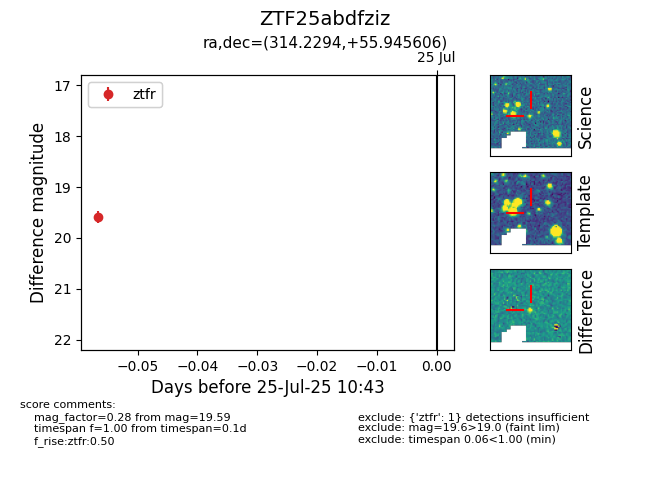

Target ZTF25abdfziz at 2025-07-25 10:43, see:
FINK: fink-portal.org/ZTF25abdfziz
Lasair: lasair-ztf.lsst.ac.uk/objects/ZTF25abdfziz
ALeRCE: alerce.online/object/ZTF25abdfziz
alt names
ZTF25abdfziz (ztf,fink)
coordinates:
equatorial (ra, dec) = (314.2294,+55.94561)
galactic (l, b) = (94.1480,+6.79692)
photometry
last ztfr=19.59
1 ztfr detections
